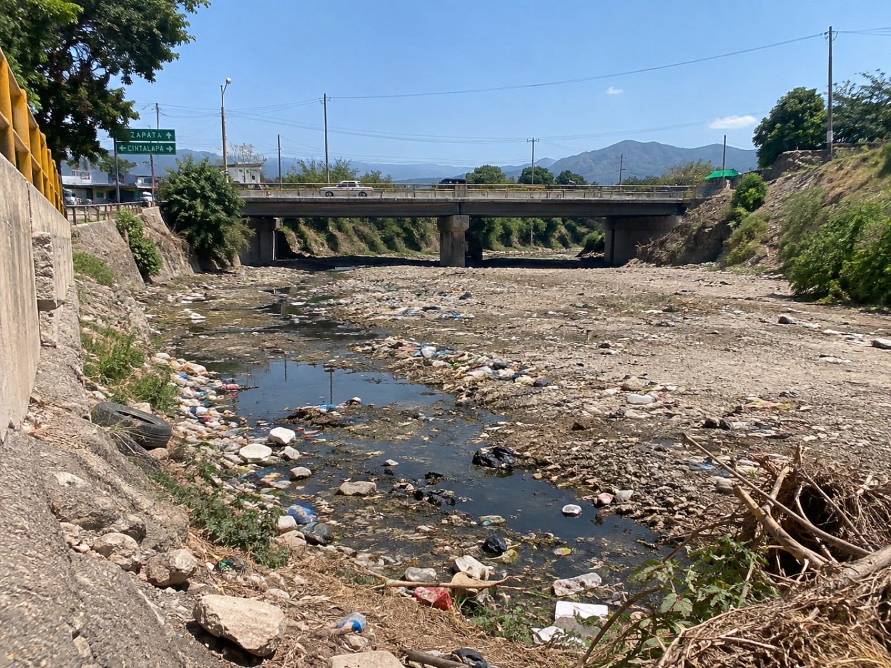
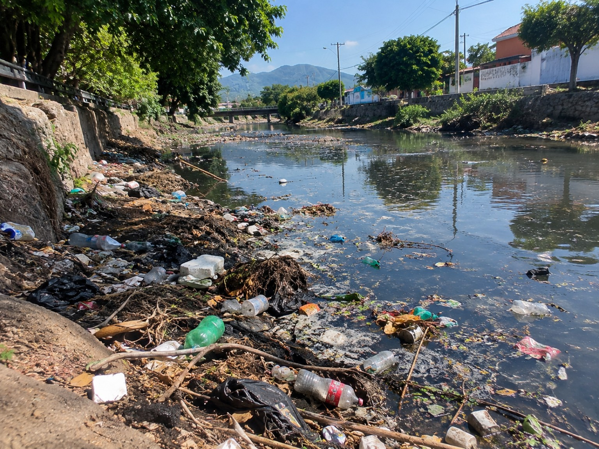
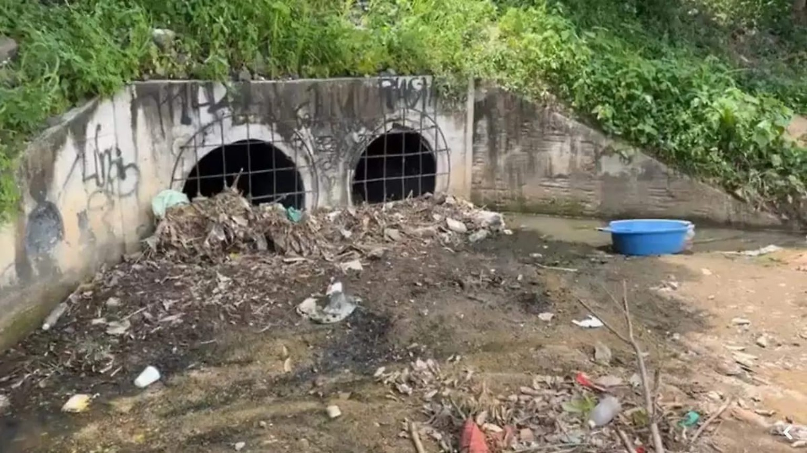
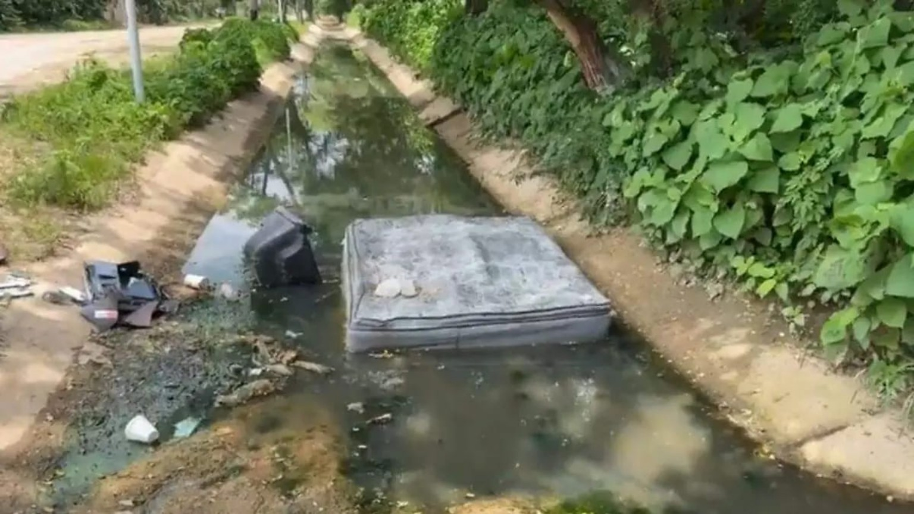
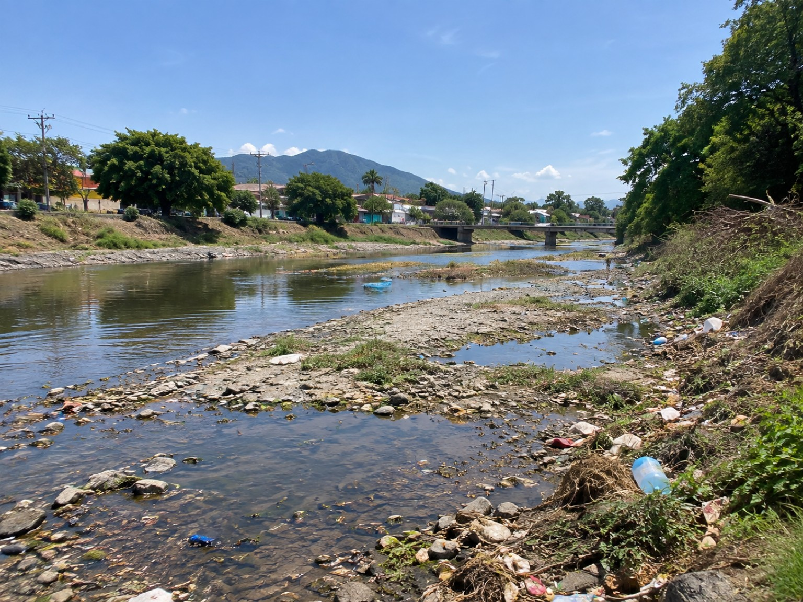
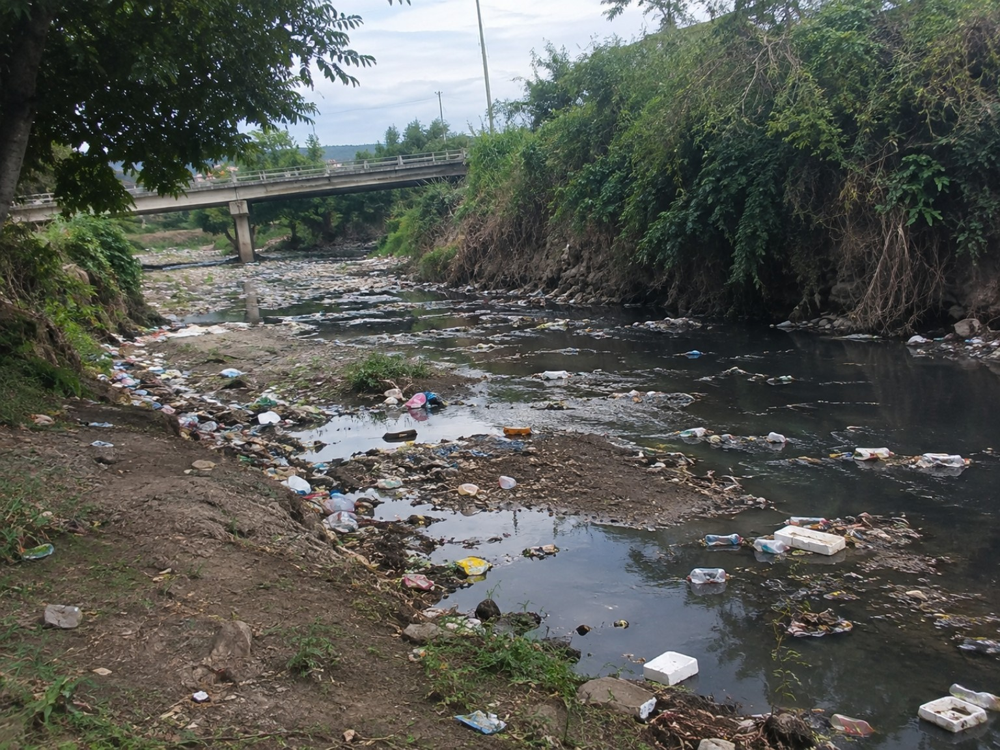

Residuos
La basura mal manejada puede terminar cerca de corrientes, drenajes o cuerpos de agua. Por eso observar el entorno también ayuda a entender el problema.
Elegimos hablar de la contaminación del agua en Cintalapa porque es un tema que no se queda solamente en lo ambiental. También nos hace pensar en cómo actuamos, qué valores practicamos y qué responsabilidad tenemos como comunidad.
Cuando escuchamos “contaminación del agua”, muchas veces pensamos en algo lejano o en un problema que solamente corresponde a las autoridades. Al trabajar este proyecto nos dimos cuenta de que también tiene una parte cotidiana: lo que tiramos, lo que dejamos de hacer y la forma en que cuidamos —o descuidamos— los espacios que compartimos.
Como estudiantes de primer semestre, nuestro objetivo fue acercarnos a una situación de nuestra comunidad y tratar de verla con más atención. No quisimos hacer una investigación complicada ni hablar como expertos. Queríamos observar, registrar lo que realmente encontráramos y después relacionarlo con la ética, la moral y los valores que estamos estudiando en clase.
Para nosotros, cuidar el agua empieza por reconocer que nuestras acciones sí tienen consecuencias, aunque parezcan pequeñas.
Entorno seleccionado: [Escriban aquí el lugar exacto que visitaron en Cintalapa, Chiapas].
Elegimos este entorno porque queríamos analizar una situación que pudiéramos observar directamente y no solamente copiar de una fuente. Durante nuestra visita buscamos prestar atención a detalles que normalmente pasan desapercibidos: el estado del agua, los residuos alrededor, las condiciones del lugar y las acciones de las personas.
Para nosotros fue importante no llegar al lugar solamente buscando algo que confirmara una idea que ya teníamos. Primero observamos y después tratamos de explicar lo que vimos. Esa diferencia nos ayudó a trabajar de una forma más honesta: una cosa es lo que se puede comprobar directamente y otra lo que podemos interpretar o investigar después.

La fotografía muestra un puente y el cauce que pasa por debajo. También se observan residuos en diferentes puntos. Para nuestro análisis, esta vista sirve como referencia general antes de revisar los detalles de la contaminación.
La contaminación del agua puede estar relacionada con distintas fuentes y actividades. A nivel nacional, CONAGUA utiliza indicadores físicos, químicos y microbiológicos para evaluar la calidad del agua. En nuestro proyecto, sin embargo, distinguimos entre lo que dicen las fuentes y lo que nosotros realmente observamos.
La basura mal manejada puede terminar cerca de corrientes, drenajes o cuerpos de agua. Por eso observar el entorno también ayuda a entender el problema.
Algunas acciones cotidianas parecen pequeñas, pero cuando se repiten pueden contribuir al deterioro de los espacios comunes.
La situación nos lleva a preguntar quién debe actuar y, sobre todo, qué podemos hacer nosotros desde nuestra vida diaria.

En esta evidencia se observan botellas, bolsas y otros residuos en la orilla y sobre el agua. Lo que vemos no nos permite identificar por sí solo el origen de cada residuo, pero sí nos da un punto concreto para reflexionar sobre el manejo de la basura y la responsabilidad compartida.
Aquí queremos contar lo que realmente vimos, sin exagerarlo y sin inventar situaciones que no ocurrieron.
Una de las cosas que más nos llamó la atención fue que, al observar con calma, empezamos a notar detalles que normalmente ignoramos. En lugar de llegar con una conclusión ya hecha, tratamos de preguntarnos: ¿qué estamos viendo?, ¿por qué puede estar pasando?, ¿qué hacen las personas?, ¿qué hacemos nosotros cuando estamos en un espacio así?
También entendimos que observar no significa señalar o culpar a una persona. Para nosotros, analizar fue intentar entender el comportamiento: qué acciones ayudan a cuidar el lugar, cuáles pueden perjudicarlo y qué alternativas serían más responsables. Esto hizo que el trabajo se sintiera menos como una simple descripción y más como una reflexión sobre nuestras propias decisiones.

Al acercarnos a puntos como este, notamos que la contaminación visible no está únicamente en el agua. También hay residuos acumulados alrededor de las entradas y salidas de agua. Esa observación nos llevó a relacionar el problema con hábitos, responsabilidad y cuidado del espacio común.
Aquí conectamos lo observado con lo aprendido en Taller de Ética. No se trata de dar una respuesta perfecta, sino de explicar con nuestras propias palabras qué relación encontramos.
La relacionamos con pensar antes de actuar y considerar cómo nuestras decisiones pueden afectar a otras personas, animales, plantas y al lugar donde vivimos.
La entendimos como las ideas, normas y costumbres que nos ayudan a distinguir acciones que consideramos correctas o incorrectas dentro de una comunidad.
Identificamos valores como respeto, responsabilidad, solidaridad, empatía, compromiso y cuidado del ambiente.
“Nosotros creemos que la contaminación no aparece de la nada. Detrás de un residuo tirado o de una acción que afecta al agua existe una decisión. Y ahí es donde entra la ética: en preguntarnos si lo que hacemos es solamente conveniente para nosotros o también es responsable con los demás.”
Elegimos un espacio de la comunidad que pudiéramos visitar y observar directamente.
Realizamos la visita y prestamos atención al estado del lugar y a las situaciones relacionadas con el agua.
Tomamos fotografías y, si corresponde, videos. Las evidencias deben ser reales y estar ordenadas cronológicamente.
Comparamos lo observado con los conceptos de ética, moral y valores vistos en clase.
Seleccionamos la información relevante y escribimos nuestras conclusiones con nuestras propias palabras.
Integramos portada, introducción, índice, desarrollo, evidencias, resultados, conclusión y bibliografía.
Organizamos las evidencias en una secuencia para que se pueda seguir el recorrido: primero ubicamos el entorno, después identificamos la problemática y finalmente observamos con mayor detalle las condiciones del agua y sus alrededores.
Porque la actividad pide documentar lo observado. Las imágenes ayudan a que el reporte no se quede solamente en palabras y permiten relacionar nuestro análisis con una situación concreta.
Las fotografías muestran condiciones visibles del lugar. No sustituyen un análisis de laboratorio del agua; por eso evitamos afirmar que una sustancia específica está presente si no tenemos una prueba que lo demuestre.
En esta imagen observamos una estructura de drenaje y una acumulación considerable de residuos en la zona. Nos llamó la atención que la basura se concentra cerca de las entradas de agua, lo que puede favorecer que los residuos sean arrastrados cuando aumenta el flujo.

Aquí se aprecia un canal con agua de apariencia oscura y diferentes objetos alrededor y dentro del cauce. Para nosotros fue importante observar no solamente el agua, sino también lo que la rodea, porque ambos elementos forman parte del mismo problema ambiental.

La vista general permite identificar que la problemática no se limita a un solo punto. Se observan residuos dispersos en las orillas y zonas con poca cantidad de agua. Esta perspectiva nos ayudó a entender el entorno antes de enfocarnos en detalles.
En esta parte identificamos con mayor claridad residuos como botellas, bolsas y otros materiales acumulados en la orilla y sobre el agua. Esto nos hizo reflexionar sobre la importancia de disponer correctamente la basura y no tratar los cuerpos de agua como lugares para desecharla.
Esta fotografía ayuda a contextualizar el sitio porque se observa señalización hacia Cintalapa y Zapata. Debajo del puente se aprecia un cauce con poca agua y residuos. La usamos como referencia visual del entorno que estamos analizando.

En esta toma se observan residuos flotando y acumulados en la orilla. Para nosotros esta imagen resume una parte importante del problema: cuando los residuos llegan al agua, dejan de ser solamente basura en un lugar y pasan a afectar un espacio que compartimos con otras personas y con el ambiente.
Este video complementa las fotografías y permite apreciar directamente las condiciones del entorno y la presencia de residuos en el agua y sus alrededores.
Registro audiovisual realizado durante la actividad de observación.
Primero separamos los hechos de nuestras opiniones. Es decir, anotamos aquello que podíamos ver, escuchar o registrar directamente y evitamos presentar como hecho algo que solamente suponíamos.
Después nos preguntamos por qué una situación relacionada con el agua puede mantenerse. Aquí entran los hábitos, la falta de cuidado, la responsabilidad compartida y también la necesidad de que existan acciones organizadas para proteger el ambiente.
Desde el punto de vista de la ética, no se trata únicamente de saber qué está bien o mal. También implica pensar cómo nuestras decisiones afectan a otras personas y al espacio que todos compartimos.
No creemos que dos estudiantes puedan resolver por sí solos un problema ambiental. Lo que sí podemos hacer es actuar con responsabilidad, evitar prácticas que dañen el entorno, comunicar lo que encontramos y participar en acciones de cuidado.
Lo que más nos dejó esta actividad fue entender que la ética no solamente se estudia para un examen; también aparece en decisiones muy sencillas de la vida diaria.
Aprendimos que observar una problemática de cerca cambia la manera en que la entendemos.
Entendimos que el cuidado del agua no depende solamente de una institución; también involucra hábitos y decisiones personales.
Relacionamos la responsabilidad ambiental con valores que vemos en clase, como respeto, compromiso y solidaridad.
Nos dimos cuenta de que una buena investigación no consiste en inventar respuestas, sino en diferenciar lo observado de lo que consultamos en fuentes.
Al principio pensamos que el trabajo sería solamente tomar algunas fotos y explicar qué era la contaminación. Al hacerlo, vimos que la parte más interesante era preguntarnos qué papel tenemos nosotros. No podemos resolver todo un problema ambiental en un día, pero sí podemos empezar por cambiar la forma en que actuamos en los lugares que compartimos.
Después de realizar este proyecto, consideramos que hablar de contaminación del agua no es solamente hablar de residuos o de un problema ambiental. También es hablar de las decisiones que tomamos y de cómo esas decisiones afectan los espacios que compartimos.
Como estudiantes de primer semestre, esta actividad nos ayudó a entender la ética de una manera más cercana. En clase podemos aprender conceptos como responsabilidad, respeto o solidaridad, pero al observar una situación real entendemos que esos valores se ponen a prueba en acciones muy sencillas.
Nuestro principal aprendizaje fue que no debemos esperar a que otra persona empiece a cuidar el ambiente para hacerlo nosotros. También entendimos que debemos ser cuidadosos con lo que afirmamos: una fotografía puede mostrar algo visible, pero no reemplaza un estudio técnico de la calidad del agua. Por eso combinamos nuestra observación con fuentes confiables y dejamos claro qué parte corresponde a nuestra experiencia.
El trabajo fue realizado por dos integrantes. Ambos participamos en la observación, análisis y construcción del reporte, repartiendo las actividades para poder comparar nuestras ideas y revisar juntos el resultado final.
Número de control: 26887046
Participó en la búsqueda y organización de información, la observación del entorno, el análisis de la problemática y la elaboración de la estructura y contenido de la página web.
Número de control: 26887031
Participó en la observación del entorno, registro y selección de evidencias, análisis de la situación y revisión de la redacción y presentación final del proyecto.
Como somos solamente dos integrantes, decidimos que los dos estuviéramos involucrados en las diferentes partes del trabajo. Así pudimos comentar lo que entendíamos, corregirnos entre nosotros y evitar que el reporte dependiera de la opinión de una sola persona.
Las siguientes fuentes son de instituciones oficiales y sirven para contextualizar la calidad del agua y la gestión ambiental. Agrega también las fuentes que realmente haya utilizado el equipo.